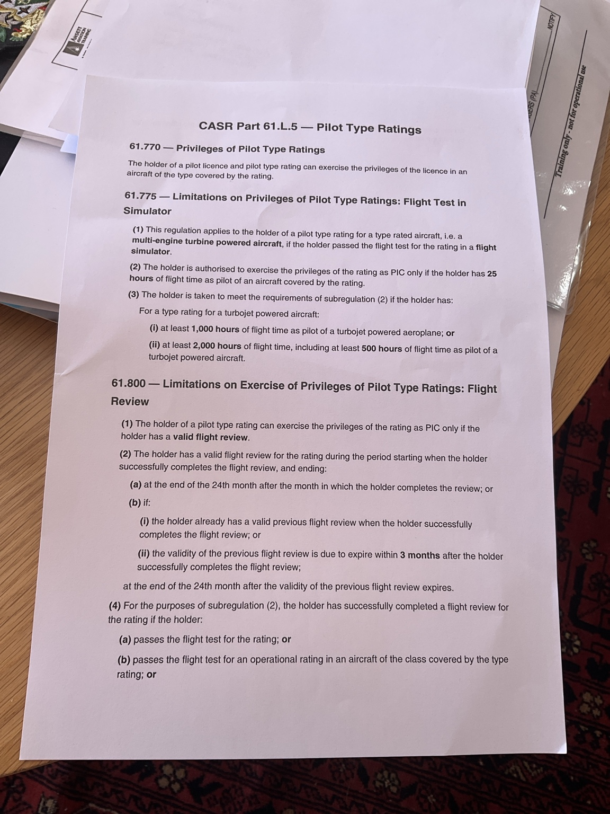

Pilot Type Ratings
Study the notes, then practise the rules with 36 questions.
61.770–61.805 · Multi-crew aeroplane focus
Test your recall
Questions and answer positions shuffle each run. Quiz results stay in this session.
The early-renewal conditions in 61.800(2)(b) require AND. In both 61.800(4)(b) and (c), the operational-rating test and design-feature training must use an aircraft of the relevant type. The photos use the older “class” wording, changed on 30 June 2026.
The photos stop partway through 61.800(4). Further flight-review alternatives appear below.
Privileges
A pilot licence plus the relevant type rating permits the licence’s privileges to be exercised in aircraft covered by that rating.
Subject to Subpart 61.E and regulations 61.775–61.805. A type rating does not increase the privileges of the licence itself.
Simulator flight test → PIC
For a multi-engine turbine aircraft type rating obtained by passing the flight test in a simulator, the baseline is 25 hours of flight time as pilot of an aircraft covered by the rating before exercising PIC privileges.
This provision restricts PIC privileges. It says “as pilot”, not “as PIC”. Experience alternatives can satisfy it.
Turbojet experience alternatives
- 1,000 hours as pilot of a turbojet-powered aeroplane; OR
- 2,000 hours of flight time, including 500 hours as pilot of a turbojet-powered aeroplane.
Either alternative satisfies the 25-hour requirement. These hours need not all be on the new type.
Flight-review validity
Exercising the type rating as PIC requires a valid flight review for the rating, including any applicable deemed-valid alternative.
Ordinary validity runs from successful completion to the end of the 24th month after the completion month.
Example: completed 12 September 2026 → expires 30 September 2028.
Renewing early
Carry forward the previous expiry only when the previous review is still valid AND due to expire within three months of completing the new review. The new validity ends at the end of the 24th month after the previous review expires.
Example: previous expiry 31 December 2026, renewed 15 November 2026 → new expiry 31 December 2028.
Meeting the flight-review requirement
A multi-crew aeroplane review may use the aircraft or an approved simulator for the type. Credits include the type-rating flight test, an operational-rating test in the type, design-feature training in the type, and qualifying operator or listed proficiency checks.
Reviews for another rating · 61.800(5A)(b)
For multi-engine aeroplanes, a qualifying valid multi-engine class review or a valid review under 61.800(2) for another multi-engine aeroplane type is recognised. Under 202.291(1), these new credits apply to reviews successfully completed on or after 30 June 2026.
Operator training and checking · 61.800(6)
Successful participation for operations in the type also meets the requirement when the system has the relevant 61.040 approval.
These are flight-review provisions. Other licence, type, recency, IFR and operator requirements still apply.
Variants and competence
Complete prescribed differences training before flying a variant that requires it. Where no differences course is prescribed, you must still be competent in the actual aircraft’s systems, procedures, limitations and performance.
Crew restrictions
A multi-crew type rating is exercised only in multi-crew operations. A single-pilot type-rating holder needs a multi-crew type rating or approved MCC training to use that rating in multi-crew operations.
IFR qualification and currency
The type-rating test must have been conducted under IFR, or an IPC must subsequently have been completed in an aircraft covered by the rating. You also need valid type IPC coverage and the applicable underlying instrument privileges, recency and operator qualifications.
A flight review alone does not establish IFR qualification or currency.
Model recency
In the previous 24 months, exercise the rating in the model, pass its rating flight test, complete its flight review, or complete its prescribed differences training where required. Alternatively, successfully participate in a system with the relevant 61.040 approval for operations in that model.
Credit for a review in another rating does not automatically establish model recency.
Type IPC limits
- Ordinary type IPC validity ends at the end of the 24th month after its completion month, subject to early renewal and the other conditions in 61.805. Separate instrument-rating, licence and operator checks may be required sooner.
- For a multi-crew aeroplane multi-crew type rating, a valid IPC under 61.805 for another multi-crew aeroplane type can provide type IPC credit.
- A failed category, multi-engine or type IPC listed in 61.805(4A) removes deemed type IPC validity for aircraft types in that category.
- If validity rests solely on approved operator-system participation, it covers only that operator’s operations.
- The June 2026 IPC amendments apply to IPCs completed on or after 30 June 2026. Specified flight tests, operator checks, system participation and approvals may be before, on or after that date.
See 202.291(2), Volume 5 p.66 for the application rule. IPC completion requires the assessment, recording and aircraft/device conditions in 61.805(5)–(8).
View your original handout
Original photo retained unchanged. Use the corrected notes above when studying.


Source check: both supplied photos, CASR compilation 102, 30 June 2026 (F2026C00560), Volume 2, pp.173–179, and F2026L00846, including the 202.291(1) application rule. Rechecked 4 October 2026. The Register lists an effective period ending 28 September 2026 for compilation 102; the amendments commencing 29 September affect restricted-category and remotely piloted aircraft, without changing 61.770–61.805. Current Register. This module summarises the specified regulations; individual exemptions and operator approvals are not assessed.